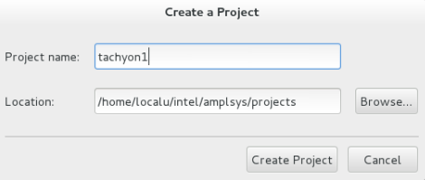
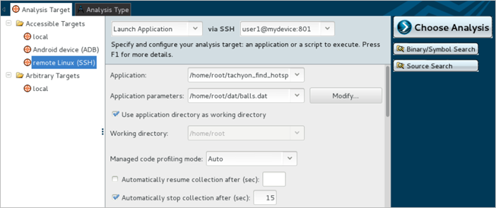
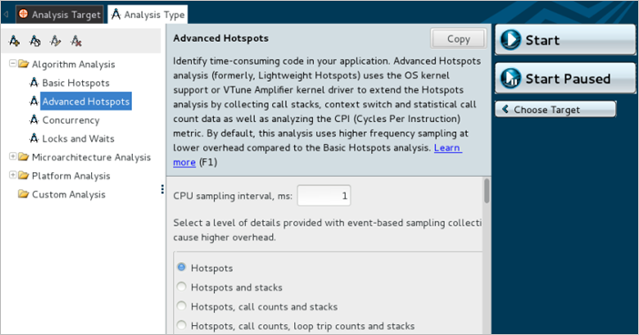

Enabling Performance Collection on an Embedded Linux* System
The following steps show you how to launch the Intel® VTune™ Amplifier for Systems GUI and create a new project.
Run amplxe-gui. Refer to the steps in Navigation Quick Start to set the appropriate environment variables if you have not already done so.
Click New Project and enter an identifying project name such as tachyon1 so that you can distinguish this project from other projects. Keep or change the default project file Location: and click Create Project.

Set up the analysis target.

Select remote Linux (SSH) for the target system.
Specify the user name and the host name or IP address of the remote system you are profiling via SSH.
Enter the full path for the target binary in the Application field. In this example the path is /home/root/tachyon_find_hotspots.
Enter any the path to the data file in the Application parameters field. In this example, the path is /home/root/dat/balls.dat.
Select Automatically stop collection after (sec) and enter 15.
When collecting data remotely, the VTune Amplifier looks for the collectors on the target device in its default location: /opt/intel/vtune_amplifier_201x_for_systems.<package_num>. It also temporary stores performance results on the target system in the /tmp directory. If you followed the steps detailed in Prepare Your Target Device and Install Intel VTune Amplifier Drivers, then the collectors were installed in the default location. If you installed the target package to a different location and need to specify another temporary directory, make sure to configure your settings from the Analysis Target tab for your project.
Alternatively, use the -target-install-dir and -target-temp-dir options from the command line.
Click Choose Analysis to switch to the Analysis Type tab.
Select the Advanced Hotspots analysis type. You will notice communication with the remote system before the Analysis Type screen appears.

Click the Start button to launch the Advanced Hotspots Analysis session.
The VTune Amplifier sets up the password-less SSH connection to your target device and launches the target application. It collects Advanced Hotspots data with default settings, and then copies those results back to the host.